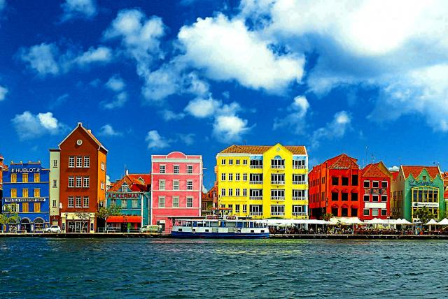
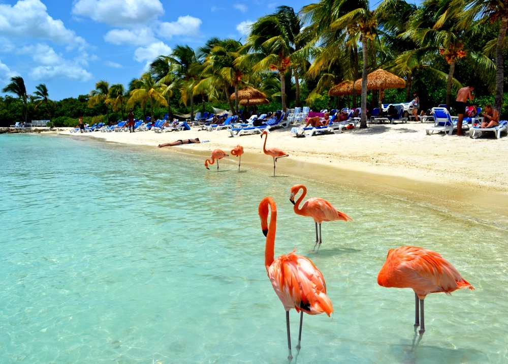

Planifica tu viaje a Curazao
Curazao, una isla neerlandesa del Caribe, es conocida por sus playas ubicadas en ensenadas
y sus extensos arrecifes de coral con abundante fauna marina. La capital, Willemstad, tiene
arquitectura colonial en colores pastel, el puente flotante de la Reina Emma y la sinagoga
Mikve Israel-Emanuel del siglo XVII, con un piso de arena. También es una vía de acceso a las
playas occidentales, como Bahía Azul, un sitio popular de buceo.
Curazao –'curación' en portugués– hay que buscarla en el Caribe sur, a 50
kilómetros de la costa de Venezuela y entre otras dos islas, Aruba y Bonaire. Con su
deslumbrante vida marina, una sucesión de playas espectaculares y una capital que presume
de un casco antiguo declarado Patrimonio de la Humanidad, esta joya caribeña poco explorada
rebosa elegancia y buen rollo.
¿Por qué viajar a Curazao?
En la isla, el mestizaje entre holandeses, afroamericanos y latinos está en todas las facetas;
su entrañable factor humano se ha tejido a base de patrimonio europeo y raíces africanas.
Desde la gastronomía, hasta la religión, pasando por la lengua, el mestizaje es evidente.
Aunque el idioma oficial de la isla es el holandés, los locales dominan el inglés y el español,
y aún conservan el papiamento, una lengua inventada por los esclavos que combina lenguas
africanas y europeas.
Curazao tiene mucho que ofrecer a casi cualquier persona, y es imposible incluir todo en una
sola publicación. Para entender la verdadera belleza de este paraíso tropical, debes sentirla por
ti mismo. Así que no esperes más, comienza a planificar tu viaje hoy y disfruta de tu próxima
escapada a Curazao.